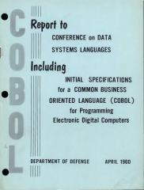
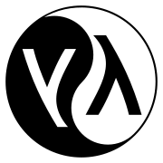
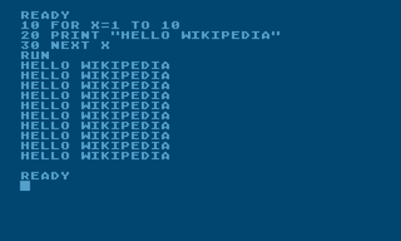
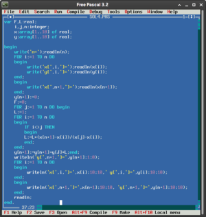
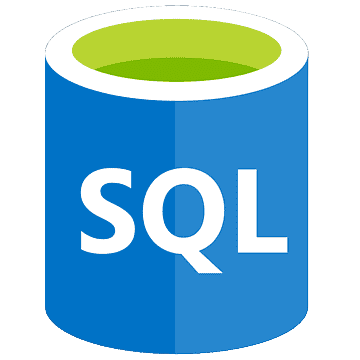
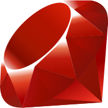

Fortran
First Appearance: 1957
Designed by: John Backus
Fortran is a general-purpose, compiled imperative programming language that is especially suited to numeric computation and scientific computing. Fortran was originally developed by IBM in the 1950s for scientific and engineering applications, and subsequently came to dominate scientific computing.
COBOL
First Appearance: 1959
Designed by: Grace Murray Hopper
COBOL is a compiled English-like computer programming language designed for business use. It is an imperative, procedural and, since 2002, object-oriented language. COBOL is primarily used in business, finance, and administrative systems for companies and governments.
Lisp
First Appearance: 1960
Designed by: John McCarthy
Lisp is a family of programming languages with a long history and a distinctive, fully parenthesized prefix notation. Originally specified in 1960, Lisp is the second-oldest high-level programming language still in common use, after Fortran.
BASIC
First Appearance: 1964
Designed by: John G. Kemeny, Thomas E. Kurtz
BASIC is a family of general-purpose, high-level programming languages designed for ease of use. The original version was created by John G. Kemeny and Thomas E. Kurtz at Dartmouth College in 1963. They wanted to enable students in non-scientific fields to use computers.
Pascal
First Appearance: 1970
Designed by: Niklaus Wirth
Pascal is an imperative and procedural programming language, designed by Niklaus Wirth as a small, efficient language intended to encourage good programming practices using structured programming and data structuring. It is named in honour of the French mathematician, philosopher and physicist Blaise Pascal.
C

First Appearance: 1972
Designed by: Dennis Ritchie
C is a general-purpose computer programming language. It was created in the 1970s by Dennis Ritchie, and remains very widely used and influential. By design, C's features cleanly reflect the capabilities of the targeted CPUs.
SQL
First Appearance: 1974
Designed by: Donald D. Chamberlin, Raymond F. Boyce
Structured Query Language, abbreviated as SQL, is a domain-specific language used in programming and designed for managing data held in a relational database management system, or for stream processing in a relational data stream management system.
C++/CPP

First Appearance: 1985
Designed by: Bjarne Stroustrup
C++ is a high-level general-purpose programming language created by Danish computer scientist Bjarne Stroustrup and first released in 1985 as an extension of the C programming language, or "C with Classes".
Erlang

First Appearance: 1986
Designed by: Ericsson
Erlang is a general-purpose, concurrent, functional high-level programming language, and a garbage-collected runtime system. The term Erlang is used interchangeably with Erlang/OTP, or Open Telecom Platform (OTP).
Haskell

First Appearance: 1990
Designed by: Committee consisting of several developers
Haskell is a general-purpose, statically-typed, purely functional programming language with type inference and lazy evaluation. Designed for teaching, research and industrial applications, Haskell has pioneered a number of programming language features such as type classes.
Python

First Appearance: 1991
Designed by: Guido van Rossum
Python is a high-level, general-purpose programming language. Its design philosophy emphasizes code readability with the use of significant indentation. Python is dynamically typed and garbage-collected. It supports multiple programming paradigms, including structured, object-oriented and functional programming.
Lua

First Appearance: 1993
Designed by: Roberto Ierusalimschy, Luiz Henrique de Figueiredo, and Waldemar Celes
Lua is a lightweight, high-level, multi-paradigm programming language designed primarily for embedded use in applications. Lua is cross-platform, and has a relatively simple C API to embed it into applications.
Java #1

First Appearance: 1995
Designed by: James Gosling
Java is a high-level, class-based, object-oriented programming language that is designed to have as few implementation dependencies as possible. It is a general purpose language, and any Java application can run on a Java Virtual Machine regardless of OS (Write once, debug run anywhere).
Ruby
First Appearance: 1995
Designed by: Yukihiro Matsumoto
Ruby is an interpreted, high-level, general-purpose programming language which supports multiple programming paradigms. It was designed with an emphasis on programming productivity and simplicity. In Ruby, everything is an object, including primitive data types.
C#/C Sharp

First Appearance: 2000
Designed by: Microsoft
C# is a general-purpose high-level programming language developed by Microsoft supporting multiple paradigms. C# is strongly influenced by Java and runs on the .NET framework.